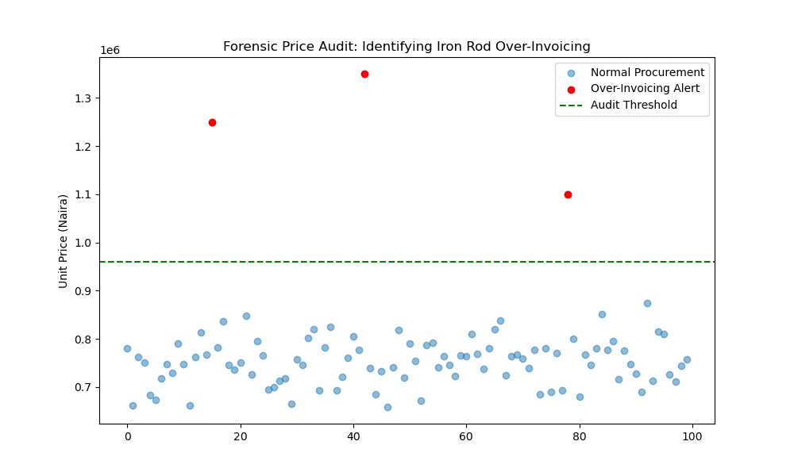
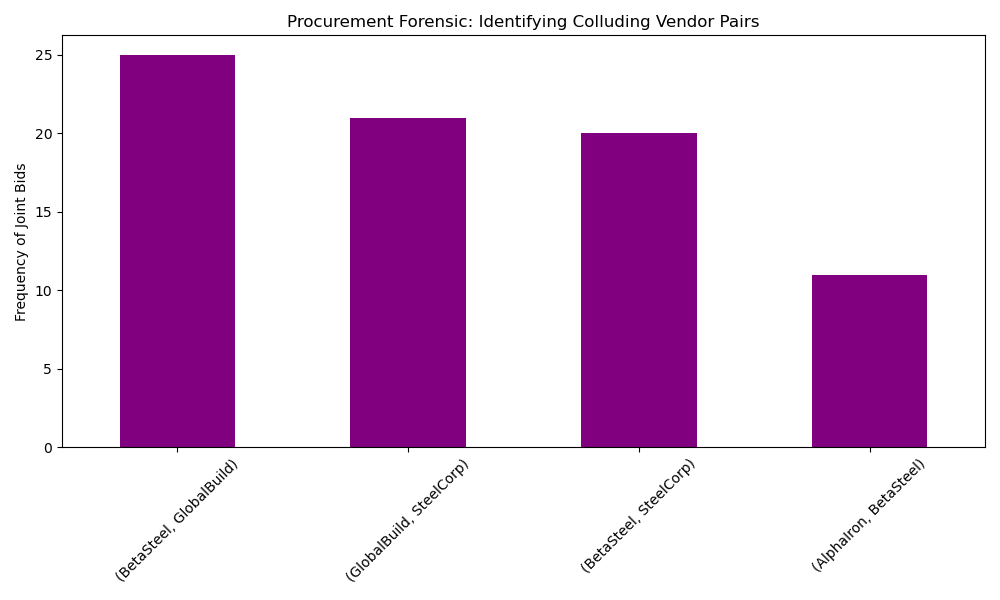
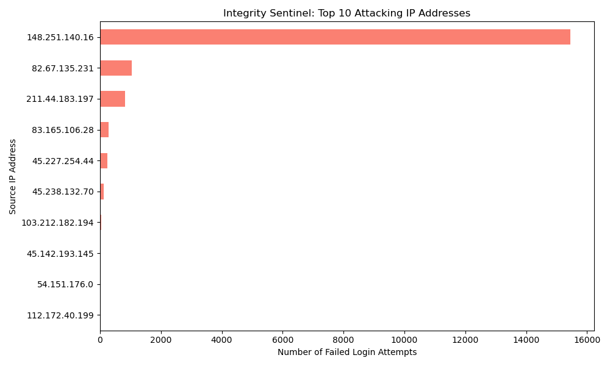
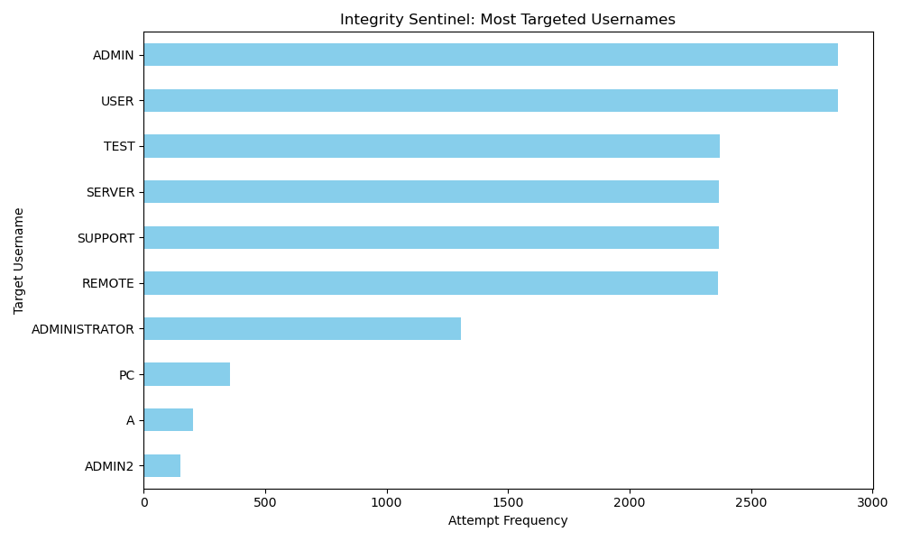

Executive Summary
With over twenty years of experience in financial problem-solving, I bridge the gap between traditional auditing and modern predictive analytics. My work leverages Python, Econometrics, and Business Intelligence to deliver high-integrity enterprise insights.
Live Analytics Projects
Live Analytics Projects
Procurement Integrity & Revenue Recovery
Anomaly Detection: Price Over-Invoicing

Relationship Mapping: Vendor Collusion Risk

Case Study: Developed a forensic engine to identify revenue leakage in a ₦250M construction ledger. This audit isolated price outliers through Z-score modeling and unmasked potential vendor collusion using joint-bidding patterns.
Stack: Python (Pandas/Itertools), Forensic Statistical Modeling, Network Relationship Analysis.
View Leakage ReportProcurement Integrity: Iron Rod Audit

Impact: Identified over-invoicing anomalies in a ₦250M construction ledger. By applying Z-score statistical modeling, I isolated price outliers that indicated potential revenue leakage.
Outcome: Quantified recoverable costs and developed a Vendor Risk Profile to prevent future budgetary inflation.
View Leakage ReportIntegrity Sentinel: Cyber-Audit & Breach Detection
Source Analysis: Attack Origin

Target Analysis: Dictionary Attack Vectors

Case Study: Real-time forensic analysis of 18,871 Windows Security Event Logs. Identified a persistent brute-force attempt (Event ID 4625) originating from IP 148.251.140.16.
Stack: Python (Pandas/Matplotlib), Windows Forensic Log Parsing.
Download Raw Audit SampleForex Risk & Volatility Analysis


Metric: USD/NGN Volatility (2023-2024). Using Python (yfinance), I track high-risk 'Volatility Clusters' impacting institutional liquidity.
Tech: Time-Series Analysis, API Integration.
Diabetes Shield
A machine learning risk assessment application built with Streamlit and Scikit-learn to forecast health risks based on diagnostic data.
View Live AppCKD Predictor
Advanced predictive modeling for Chronic Kidney Disease detection, utilizing optimized classification algorithms for medical forecasting.
View Live AppEconomic Analysis: The Petrodollar Nexus & NGN Volatility
"In a mono-product economy, the exchange rate is a reflection of external reserve liquidity and global commodity cycles."
The Correlation: My analysis confirms the deep-rooted correlation between global Brent crude prices and Naira stability. Downward shifts in global prices immediately constrain the Central Bank's capacity to intervene, leading to observed volatility spikes.
The Auditor's Perspective: This volatility represents a 'Systemic Asset Risk.' It triggers concerns regarding inflationary pressure and the devaluation of fixed-income assets.
Analysis by Bamidele Adedeji, M.Sc. Economics
Academic Research
- The Merchant Bank Paradox: Submitted to CBN Journal of Applied Statistics.
- Structural Divergence in the Debt-Growth Nexus: Published dataset on Zenodo.